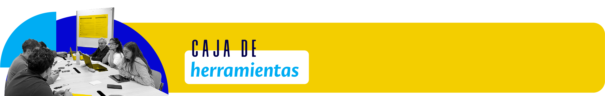
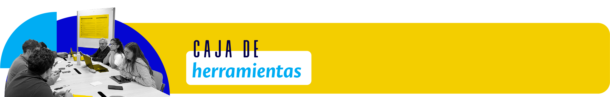

Con el fin de facilitar y motivar la sensibilización de las comunidades académicas en torno a la utilidad del documento de las orientaciones del PEP, la Dirección Nacional de Programas Curriculares de Pregrado ha puesto a disposición de la comunidad universitaria una caja de herramientas que busca posibilitar la reflexión, la revisión y la retroalimentación sobre los elementos característicos de los programas curriculares. Este insumo se estructura en torno a tres momentos: Preguntar, Explorar y Proponer.
Con las preguntas orientadoras consignadas en el momento Preguntar, buscamos que los programas reflexionen sobre su trayectoria, su contexto y su proyección, así como sobre los lineamientos de formación de la Universidad Nacional de Colombia.
En el momento Explorar hemos dispuesto una gran variedad de referentes normativos, bibliográficos e institucionales que pueden contribuir a las reflexiones y acciones que despliegan los programas. Entre esos insumos se destacan los procesos de armonización curricular que adelantan las sedes bajo el liderazgo de las direcciones académicas. También se encontrarán productos académicos relacionados con aproximaciones al enfoque territorial, la educación inclusiva y la internacionalización del currículo, así como documentos de planeación estratégica de la universidad e instrumentos metodológicos.
En el momento Proponer se encuentra la invitación a retomar el documento orientador, con el fin de que se reconozcan y consoliden las preguntas y los referentes consignados, respectivamente, en Preguntar y Explorar.
Para acceder a la Caja de Herramientas:
- Utiliza únicamente tu correo institucional
- No se permite el ingreso con correos personales (@gmail.com, @hotmail.com, etc.)
- Si tienes problemas para ingresar, contacta a soporte técnico. Recuerda: Tu correo institucional es tu llave de acceso a este recurso.
Finalmente, y a partir de las conversaciones que se generen a través de las preguntas planteadas en cada componente y de las diversas fuentes consultadas, les invitamos a proponer una narrativa que refleje las reflexiones sobre los fundamentos, los propósitos y la estructura del programa curricular. Esta narrativa debe ser capaz de transmitir de manera clara y concisa las principales ideas y conclusiones a las que se ha llegado durante el proceso de reflexión.